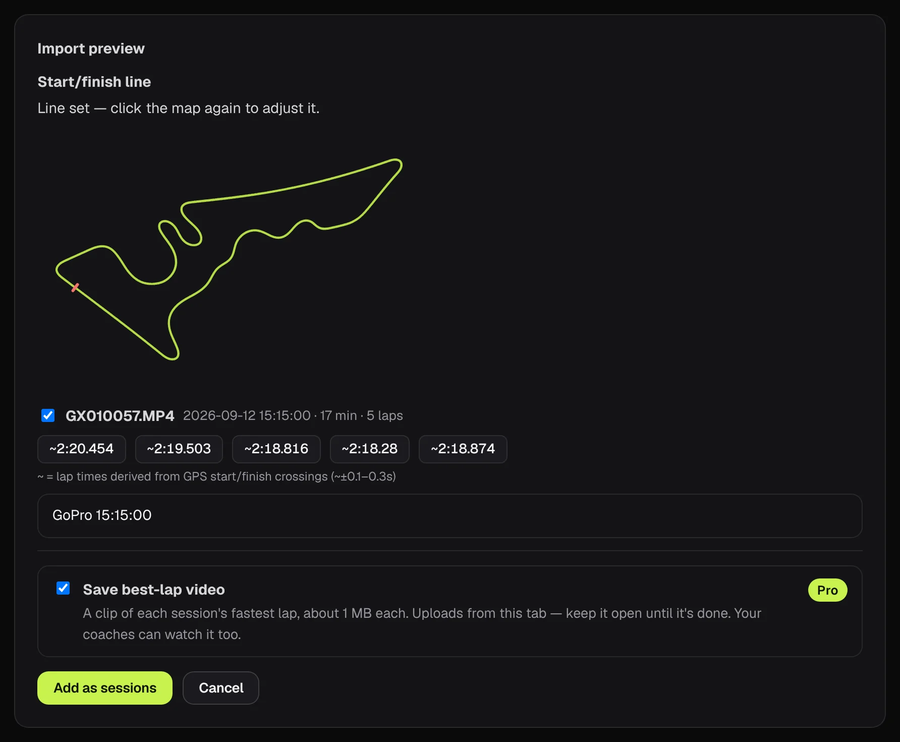

Phone GPS versus a dedicated lap timer
You can time laps with the phone already in your pocket, with a dedicated GPS lap timer, or with the data recorder some cars have built in. They differ mainly in how often they measure where the car is, and what that costs you depends on the question you are asking.
How GPS lap timing works
A GPS lap timer records a series of positions, each with a time. A lap is the time between two crossings of the start/finish line. No receiver happens to take a reading exactly on the line, so the crossing time is worked out between the reading just before it and the one just after.
That makes one number matter more than any other: the update rate, how many positions a second the device records. At 150 km/h (about 95 mph) a car covers some 40 metres a second. A device recording once a second has one reading every 40 metres to work with; one recording ten times a second has one every four.
The options
| Device | Typical update rate | Lap time precision | What else you get |
|---|---|---|---|
| Phone, built-in GPS | About once a second | Within a few tenths of a second | Speed around the lap, and a racing line |
| Phone with an external GPS receiver | Commonly ten times a second | Much closer, often within hundredths | A smoother speed trace; car data with an OBD reader |
| Dedicated GPS lap timer or logger | Ten to twenty-five times a second | Hundredths | A live display built for the car, often predictive timing |
| The car's own data recorder | Varies by maker | Good, and consistent from day to day | Throttle, brake, steering, gears, temperatures and pressures, usually with video |
When a phone is enough
A lap time that is right to within a few tenths is plenty for most of what a driver in their first seasons wants to know:
- whether you are quicker than last time at this track
- how consistent your laps are
- how your pace changes through a session and across a day
- roughly where on the lap you are fast and slow, from the speed trace
Seconds are what change in a first season, and a phone measures seconds without difficulty.
When it is not
- Chasing tenths. If a setup change is worth two tenths and your timing is good to three, you cannot see it.
- Detailed data analysis. One reading a second blurs a braking zone that lasts two.
- Anything about your inputs. GPS knows where the car was, not what your feet were doing. Brake, throttle and steering need data from the car.
Getting the best from a phone
- Give it a view of the sky. A windshield or dash mount works better than a door pocket or a bag in the trunk.
- Start recording before you leave the paddock, so it has a steady position before you are on track.
- Mount it securely. A phone that comes loose is a hazard, and most organizers require a proper mount.
- Plug it in or start with a full battery.
- Leave it alone on track. Look at it on a straight if at all, and at the laps afterward.
Both, in Track Evolution
Track Evolution takes laps from all of these and keeps them in one logbook.
- The phone. The iPhone and Android apps record a session from the phone's GPS: start before you head out, stow or mount the phone, and pick the start/finish line on the map of the track you drove when you are back in the paddock. Laps come out within roughly 0.2 to 0.5 seconds. Mounted in view, the screen shows a lap counter and a live delta to your best lap of the session. Recording is part of Pro.
- Loggers and lap-timer apps. Import Racelogic VBO files, including exports from RaceChrono, TrackAddict and Harry's LapTimer, and Porsche Track Precision exports.
- The car's recorder and action cameras. Import Corvette and Cadillac PDR video, and GoPro footage with GPS. The file is read on your own device and never uploaded.

Import is free. Whatever the source, a lap time that was worked out
between GPS readings is shown with a ~ in front, and one
the device measured exactly is shown without, so you always know
which is which.